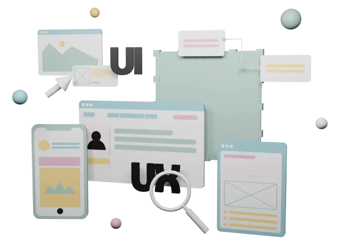
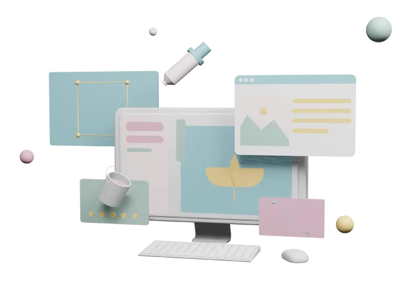
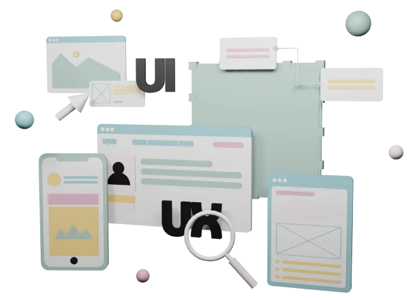
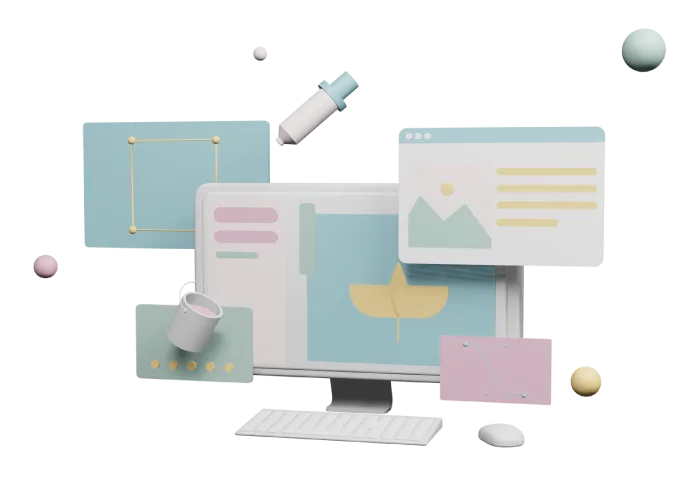

Je m’appelle Sabrina Le Gall, étudiante de 21 ans en 3ème année de BUT MMI à l’IUT de Lannion. J’effectue mes études en alternance depuis bientôt 2 ans comme assistante de communication à Photonics Bretagne.
Mon parcours académique et professionnel reflète ma passion pour la créativité sous toutes ses formes. Que ce soit à travers la production graphique, la modélisation 3D ou le développement web, j'aime explorer des horizons divers pour nourrir mon esprit créatif et développer mes compétences.
À l'avenir, je souhaite me spécialiser en tant qu’artiste 3D ou développeur front-end, fusionnant ainsi ma fascination pour la modélisation 3D avec mes compétences en développement web.
Plongez dans mon univers créatif et technique, où l'innovation et la passion se rencontrent pour donner vie à des projets uniques et inspirants.
Bachelor Universitaire de Technologie Métiers du Multimédia et de l'Internet
IUT de Lannion (22) - 2021/2024
Baccalauréat Général
Lycée du Pays de Retz à Pornic (44) - 2021
Alternance en tant qu'Assistante de Communication
Photonics Bretagne à Lannion (22) - 2022/2024
Stage d'Observation en Webdesign
Pivot Point à Nantes (44) - 2018
Experte en développement front-end, je manipule JavaScript, HTML et CSS pour créer des interfaces interactives. Je maîtrise également la personnalisation avancée de sites WordPress pour répondre précisément à chaque besoin.
Spécialisée dans la modélisation 3D avec Blender, je crée des rendus visuels captivants et des animations dynamiques. Mon expertise dans ce domaine permet de donner vie à des concepts et de produire des contenus visuels innovants pour divers projets créatifs.
La création d’interfaces intuitives et esthétiques pour offrir une expérience utilisateur optimale. Ma passion pour l'UX/UI me permet de concevoir des solutions interactives qui allient fonctionnalité et esthétique, afin de répondre aux besoins spécifiques de chaque utilisateur et de chaque projet.
Spécialisée dans le graphisme, utilisant ma créativité et mon expertise pour concevoir des visuels percutants et attractifs. Ma passion pour le graphisme me permet de créer des designs uniques et mémorables, qu'il s'agisse d'illustrations ou de supports de communication, afin de donner vie à la vision de chaque projet.
Spécialisée dans le référencement naturel, en utilisant des stratégies et des techniques avancées pour améliorer la visibilité et le classement des sites web dans les résultats de recherche. Ma maîtrise du référencement naturel me permet d'optimiser efficacement le contenu et la structure des sites web, afin d'attirer un trafic organique de qualité et de maximiser leur impact en ligne.
Développement front
Modélisation 3D
Design UX/UI
Graphisme
Référencement
 




Français
C2
Anglais
B1
Espagnol
A2
Coréen
A1
Autonomie
A l'écoute
Résolution de problèmes
Adaptabilité
Esprit d'équipe
Apprentissage individuel
Ouverte à de nouvelles collaborations et avide d'apprendre, n'hésitez pas à me contacter pour discuter de vos projets créatifs ou de développement web.
Me contacter